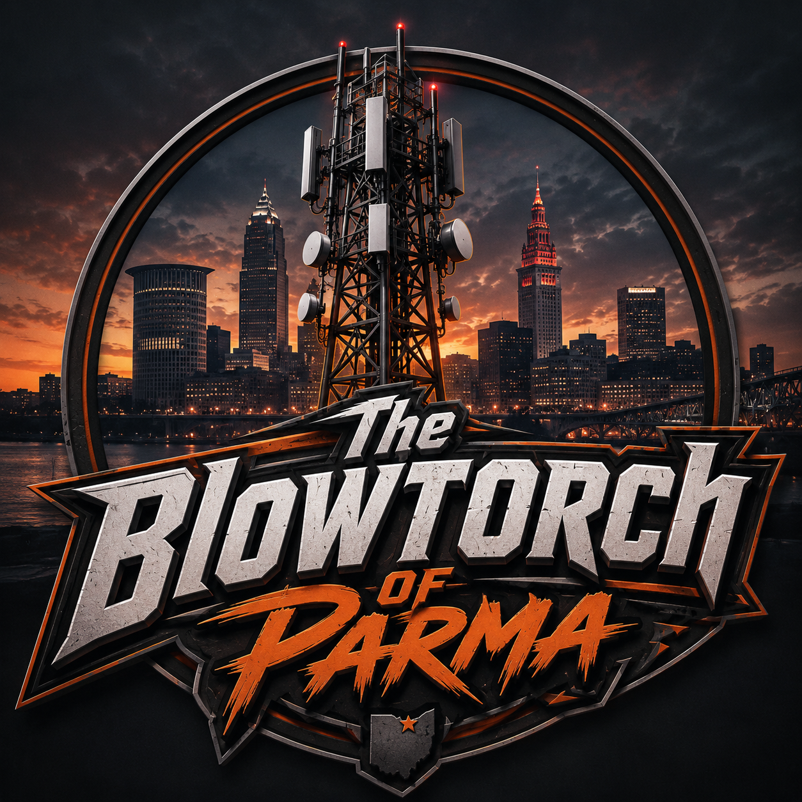

Amateur Radio Club · Northeast Ohio
The Blowtorch
of Parma
Connecting amateur radio, technical learning, fellowship, and service throughout Northeast Ohio.

In Memory Of
Jim Snell, W8DRZ
Silent Key · The Original W8DRZ
The Blowtorch of Parma Amateur Radio Club and the W8DRZ callsign are proudly carried forward in memory of Jim Snell, whose lifelong passion for radio, broadcasting, and electronics left a lasting legacy.
His legacy remains part of every signal we send. 73, Jim · W8DRZ
At a glance
Club Information
Repeater
Frequency, PL tone, coverage and link status will be posted when finalized.
Latest News
From the Club
Public Resources